[minimal-mistakes]블로그 광고(google AdSense) 추가하기
1. Google AdSense 시작하기
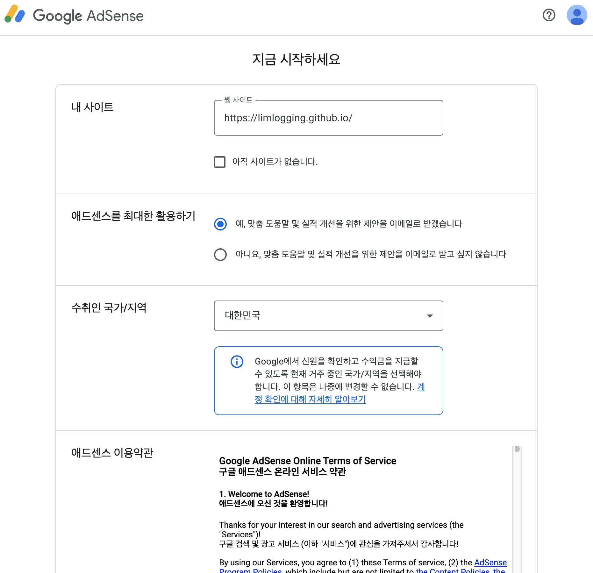
2. 애드센스에 사이트 연결하기
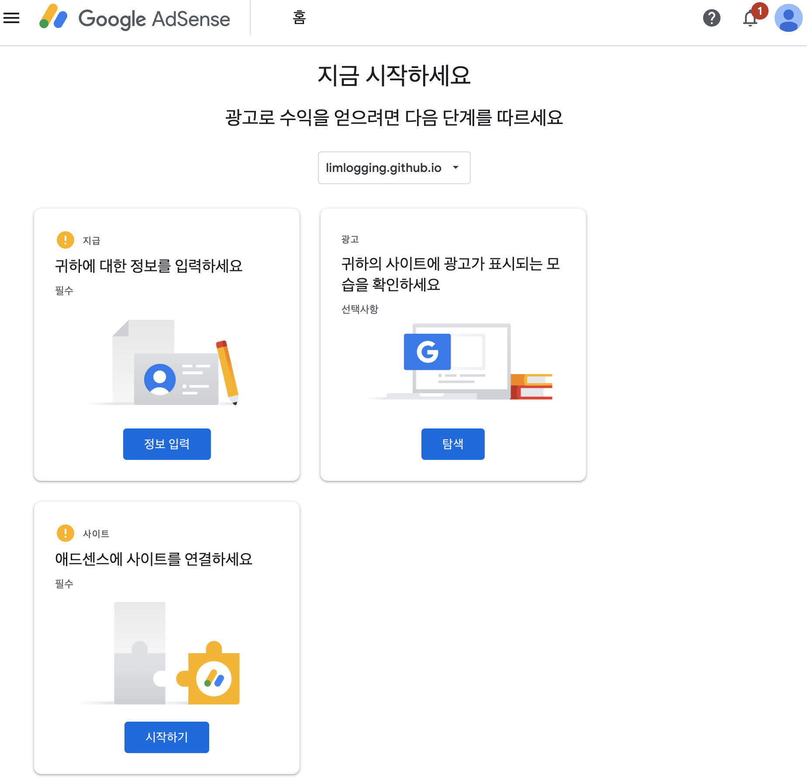
3. 코드스니펫 확인하기
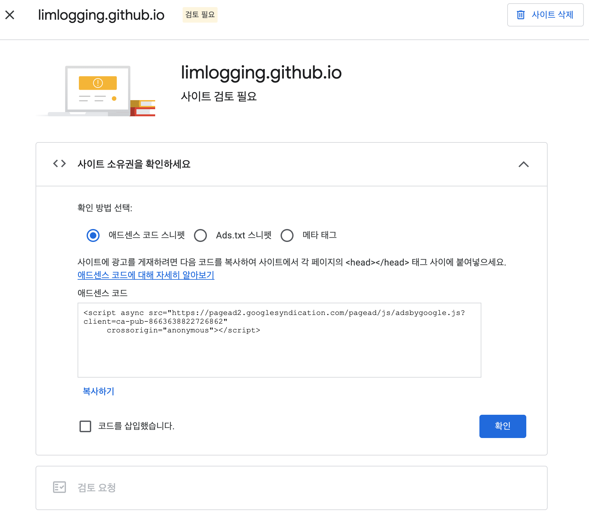
4. customs.html 수정
- _includes / head 경로에 위치한 customs.html 상단에 코드를 추가합니다.
<!-- start custom head snippets -->
<!-- 구글 애드센스 추가 -->
<script async src="https://pagead2.googlesyndication.com/pagead/js/adsbygoogle.js?client=ca-pub-8663638822726862" crossorigin="anonymous"></script>
코드 반영 전
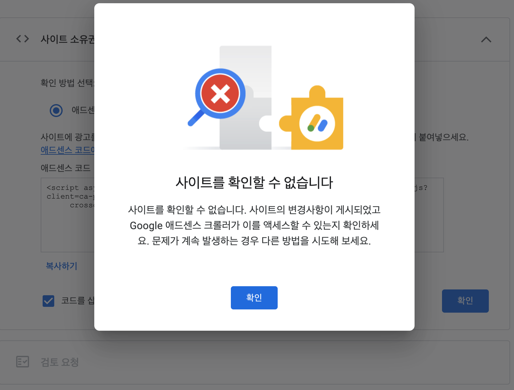
코드 반영 후
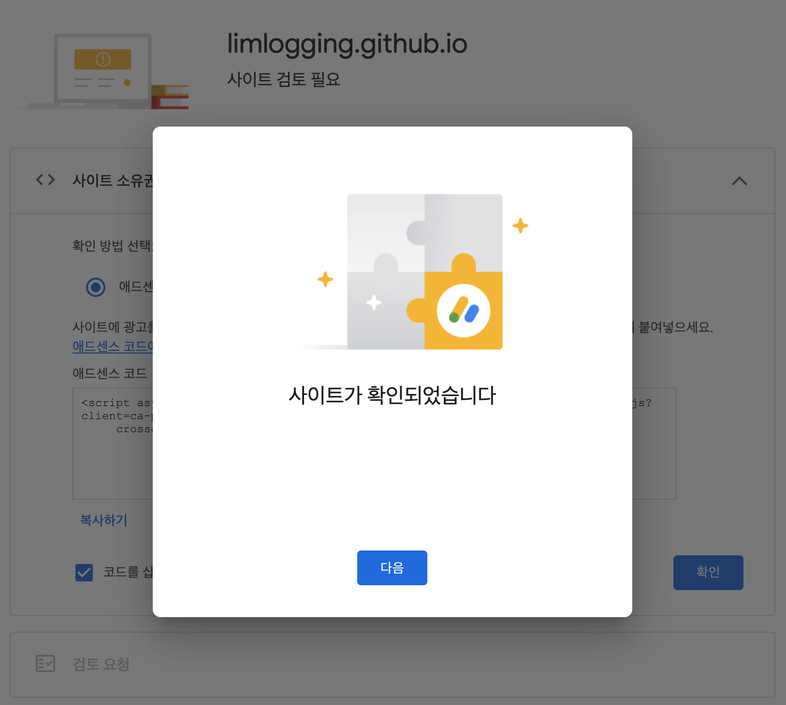
5. 애드센스 승인 메일 확인
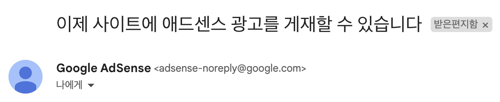
6. ads.txt 파일 추가
- 애드센스 홈에서 아래와 같은 경고창이 뜨는데 ads.txt파일을 추가하면 됩니다.
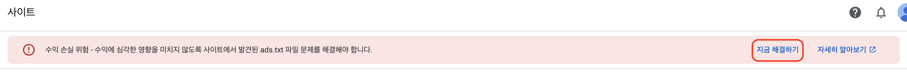
지금 해결하기 선택
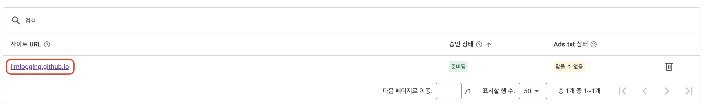
사이트 URL 선택
- 코드를 복사합니다. 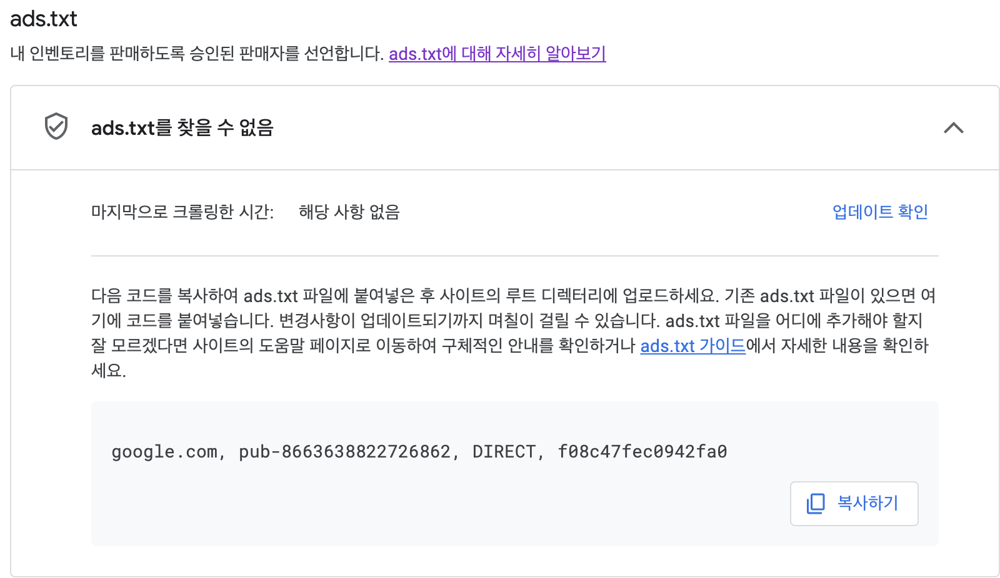
ads.txt 파일 생성 및 코드 작성
- _config.yml파일과 같은 위치에 ads.txt파일을 생성하고 복사한 코드를 추가합니다. 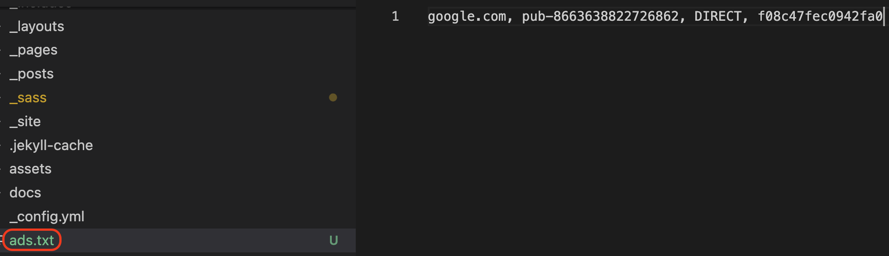
7. 블로그 하단에 광고 추가하기
- 홈 - 광고 - 광고 단위 기준에서 디스플레이 광고를 선택합니다. 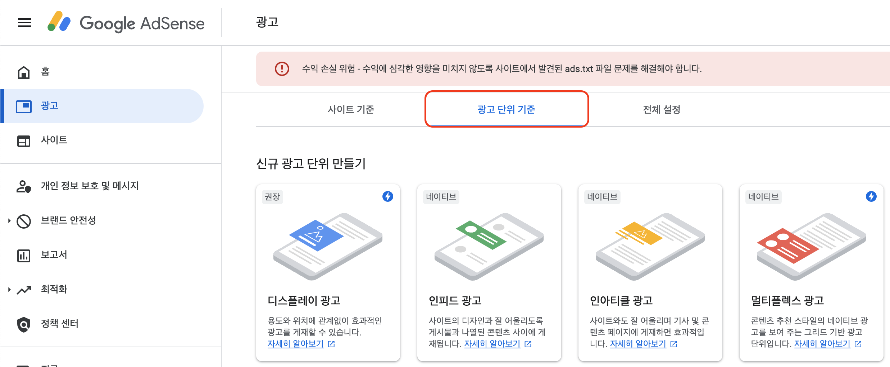
1. 수평형 디스플레이 광고를 생성
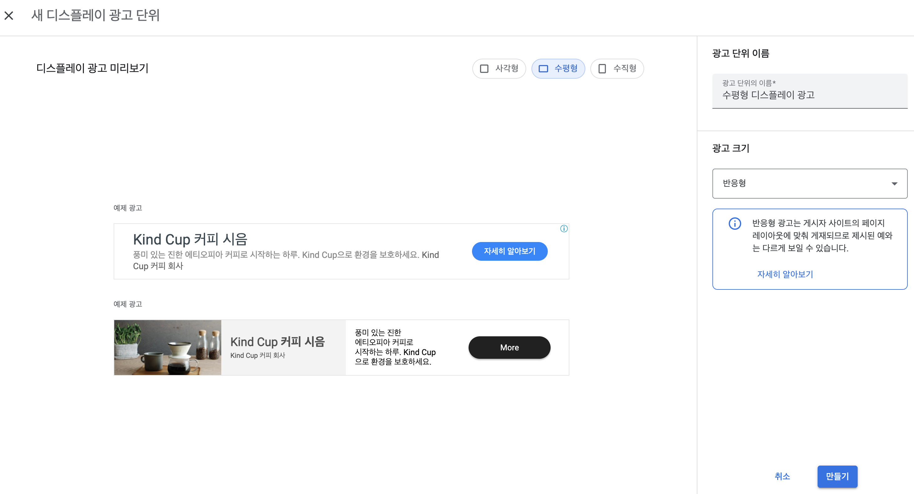
2. 코드 받기
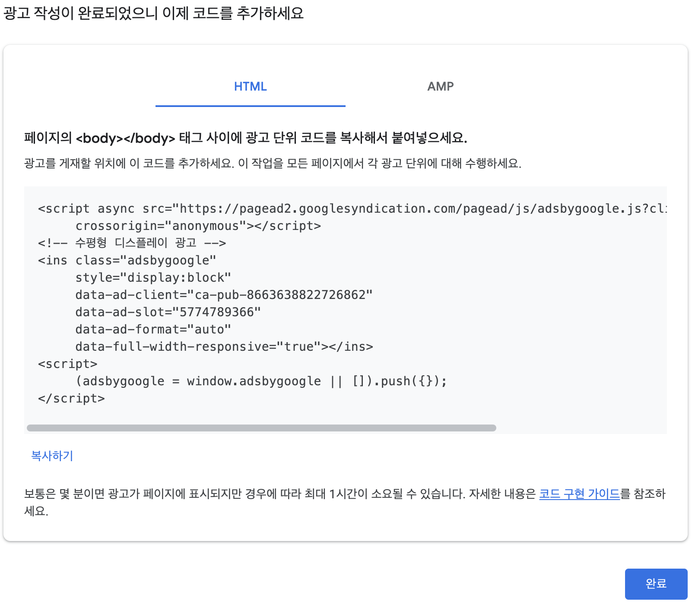
3. 코드 추가하기
- _layouts 폴더 내 single.html파일 가장 하단에 코드를 추가합니다.
<!-- 하단 광고 추가 -->
<div style="text-align: center;">
<script async src="https://pagead2.googlesyndication.com/pagead/js/adsbygoogle.js?client=ca-pub-8663638822726862"
crossorigin="anonymous"></script>
<!-- 수평형 디스플레이 광고 -->
<ins class="adsbygoogle"
style="display:block"
data-ad-client="ca-pub-8663638822726862"
data-ad-slot="5774789366"
data-ad-format="auto"
data-full-width-responsive="true"></ins>
<script>
(adsbygoogle = window.adsbygoogle || []).push({});
</script>
</div>
8. 블로그 우측 toc에 광고 추가하기
- 7번과 동일한 방법으로 수직형 디스플레이 광고를 만들고 코드를 받습니다.
1. html 파일 생성 및 코드 작성
- _includes 폴더에 GoogleAdSenseSidbar.html 파일을 추가하고 코드를 작성합니다.
<script async src="https://pagead2.googlesyndication.com/pagead/js/adsbygoogle.js?client=ca-pub-8663638822726862"
crossorigin="anonymous"></script>
<!-- 수직형 디스플레이 광고 -->
<ins class="adsbygoogle"
style="display:block"
data-ad-client="ca-pub-8663638822726862"
data-ad-slot="8971782438"
data-ad-format="auto"
data-full-width-responsive="true"></ins>
<script>
(adsbygoogle = window.adsbygoogle || []).push({});
</script>
2. _config.yml 파일 수정
- toc_ads, toc_sticky 부분을 추가합니다.
# Defaults
defaults:
# _posts
- scope:
path: ""
type: posts
values:
layout: single
author_profile: true
read_time: true
comments: # true
share: true
related: true
toc_ads: true #사이드 광고 추가
toc_sticky: true #사이드 광고 추가
# 사이드바 탐색 기본값 추가
sidebar:
nav: "categories"
3. single.html 수정
- 코드 복붙하니 너무 길어져서 캡처로 대체합니다. 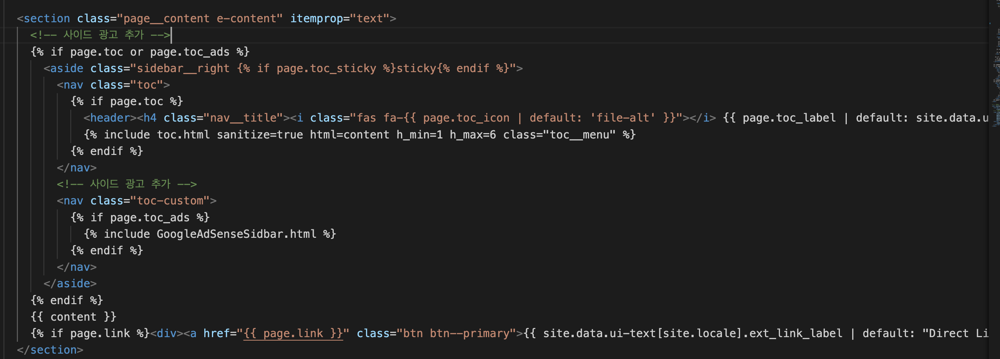
9. 하단 광고 확인
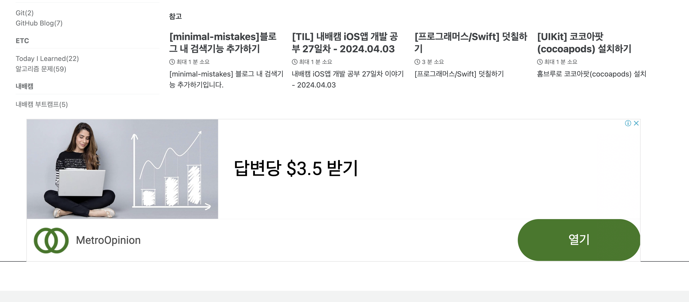
10. 우측 광고 확인
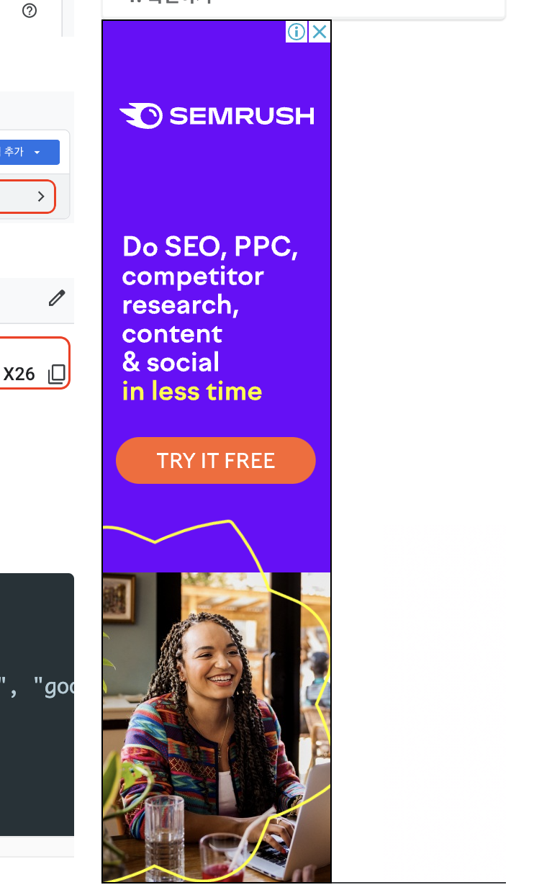